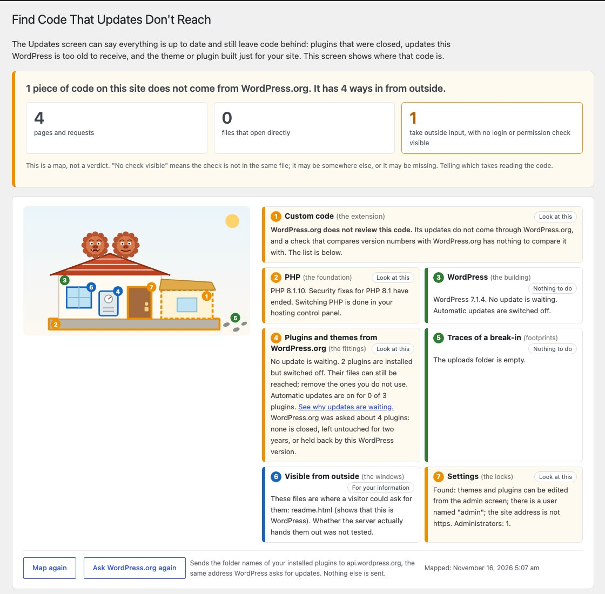
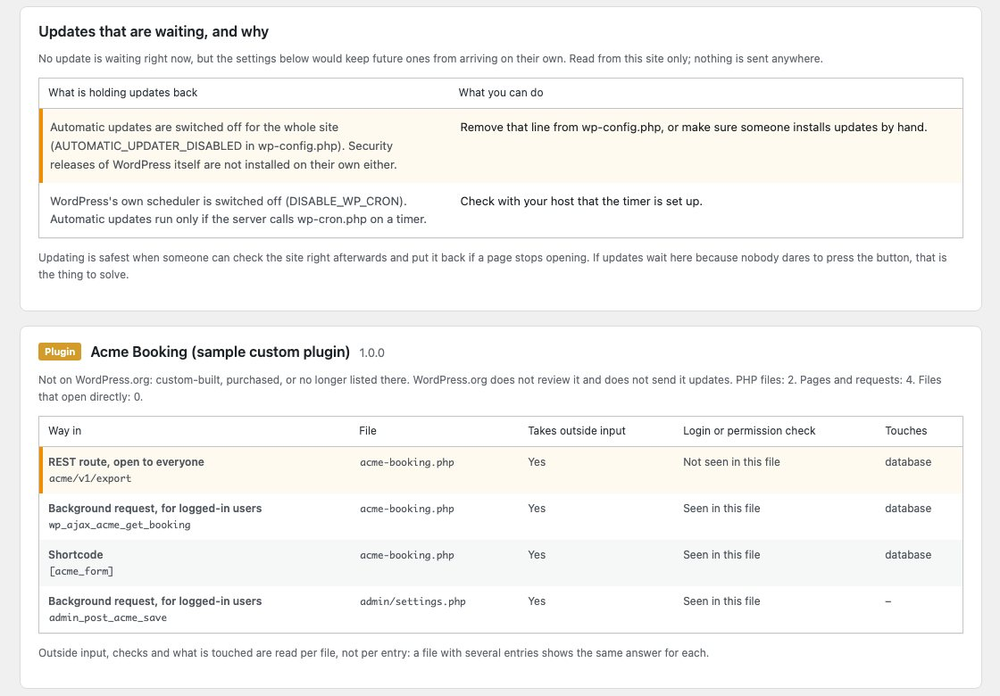

Updates don't reach the code built for your site.
The Updates screen can say everything is current and still leave code behind. This free plugin draws a map of it, inside your own WordPress.
Get the free plugin on WordPress.orgOr have the code checked and fixed

Three kinds of code no update will ever fix
- Plugins closed on WordPress.org
- Removed from the directory, still running on your site. No notice appears.
- Updates held back by an old WordPress
- The newer version needs a newer WordPress than yours, so the Updates screen never shows it.
- Themes and plugins built for one site
- Custom-made or bought elsewhere. WordPress.org does not review them and has no version to compare.
A map, not a verdict
For each piece of that code, the plugin lists every way in from outside: REST routes, background requests, shortcodes, page templates, files that run when opened directly. It marks the ones that take outside input where no login or permission check is visible in the same file.
It never says "safe". The check may live in another file, and telling which takes reading the code.

What leaves your site
Sent, when you press the button
The folder names of your installed plugins, to api.wordpress.org. It is the service WordPress itself asks for updates.
Never sent
Your code and your site data stay where they are. The map is made on your own server and changes nothing on it.
Get the free plugin on WordPress.orgGPLv2 or later. WordPress 6.2+, PHP 7.4+.
When you want that code checked and fixed
A separate, paid plugin, AI Security Check & Fix for WP, reads your theme, your site-specific plugins and plugins closed on WordPress.org, and fixes weaknesses one approved change at a time.
- FindThe AI reads the custom code and checks core and plugins against official packages and published vulnerabilities.
- ShowYou see each change, before and after.
- ApproveYou press the button. Until then, nothing changes.
- Fix and checkIt takes a backup, applies the change and opens the site. If the site does not open, it restores the backup.
One check and fix
¥50,000 first time
Regular price ¥100,000. ¥30,000 from the second. Approve as many fixes as you need.
Daily watch
¥50,000 per month
Available after the first check and fix. New vulnerability notices are checked the same day. Cancel at any time.
Prices are in Japanese yen, paid by card through Stripe. The paid plugin's screens and reports are in Japanese for now; support by email is in English or Japanese. It uses AI, and AI makes mistakes; that is why every change waits for your approval.
Watch a sample check (1 min, Japanese)Download the paid plugin (zip)
Questions
Does the free plugin send my code anywhere?
No. It reads files on your own server and stores the counts in your database. When an administrator presses "Map this site", it sends the folder names of the installed plugins to api.wordpress.org, the same service WordPress itself asks for updates. Nothing else is sent.
An entry says "Not seen in this file". Is it vulnerable?
Not necessarily. The check may live in another file. The map cannot follow that, so a person, or the paid plugin, has to read the code.
It lists a plugin I bought. Is that a problem?
Not by itself. Purchased plugins are listed because WordPress.org does not review them and does not send them updates; their own vendor does. The map shows which code depends on someone other than WordPress.org.
What does the paid plugin change on my site?
Nothing until you approve. Each fix is shown before and after. It takes a backup, applies the change and opens the site. If the site does not open, it restores the backup.
Which languages are supported?
The free plugin is in English and Japanese. The paid plugin's screens and reports are in Japanese for now. Support by email is in English or Japanese.
Who makes this
Umiushi Lab LLC, Tokyo. The plugins are written by Nobuhiko Kimoto, a committer to EC-CUBE, the open-source store system widely used in Japan. The same check is available for EC-CUBE stores; that page is in Japanese.
Write in English or Japanese: info@umiushi-lab.com